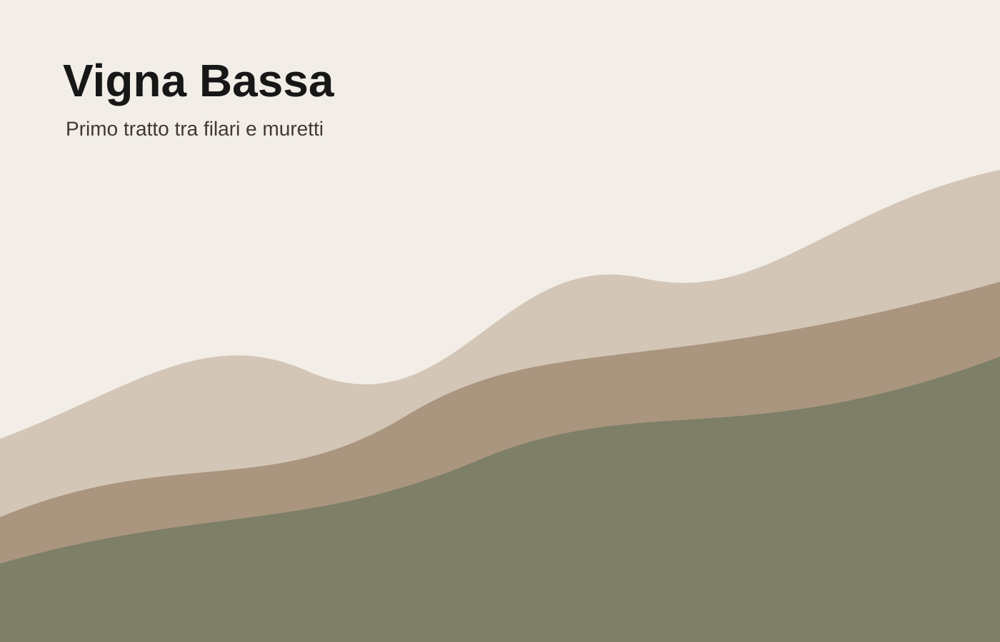
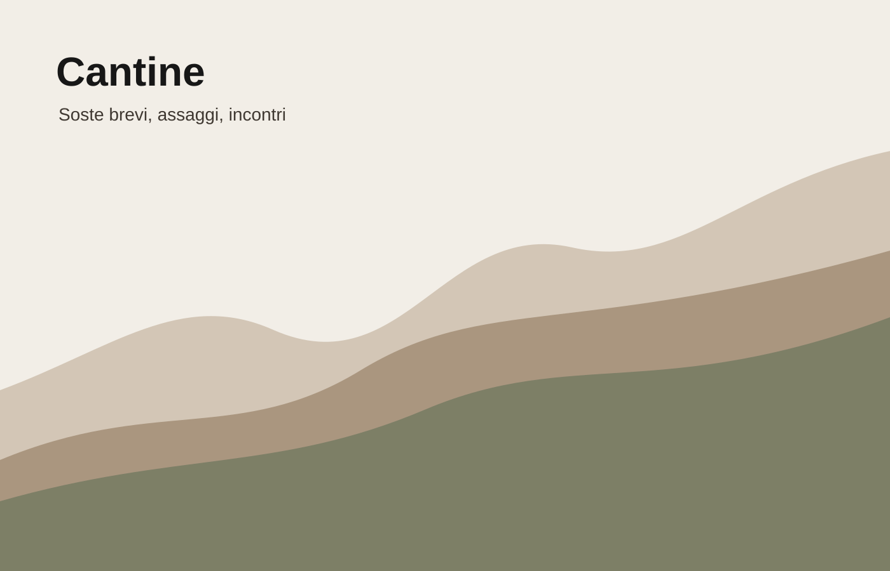
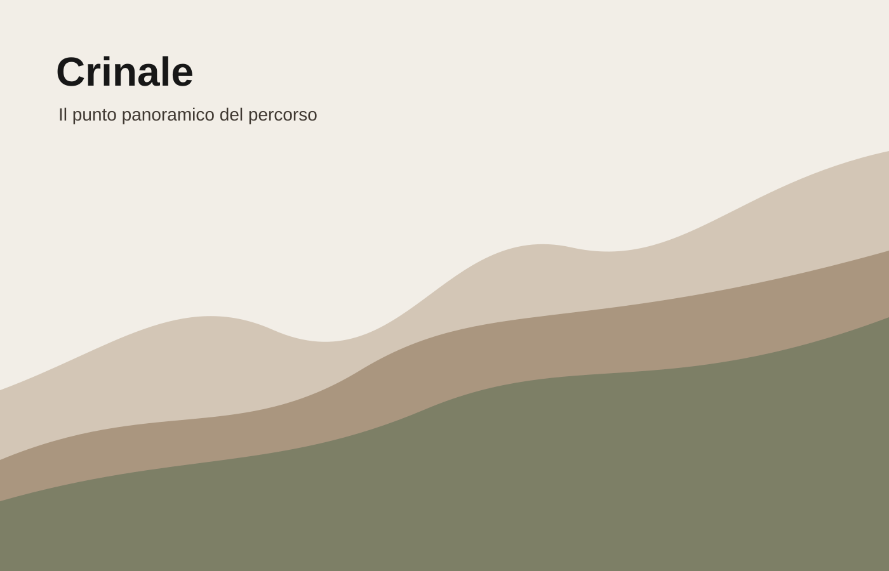
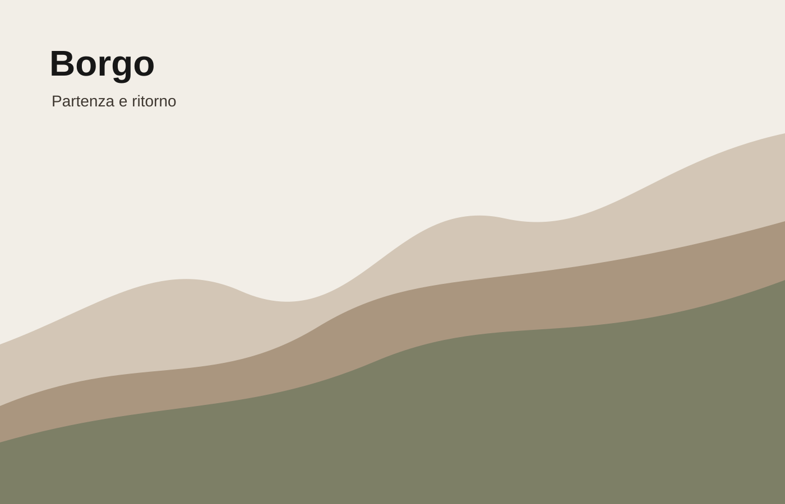

Vigna Bassa
La tappa più accessibile, legata ai rossi immediati e alla partenza dal borgo.
Barberainizio percorsoCantine
Ogni cantina non è solo un punto vendita, ma una tappa narrativa: racconta suolo, esposizione, lavoro e relazione con il paesaggio.


La tappa più accessibile, legata ai rossi immediati e alla partenza dal borgo.
Barberainizio percorso
La quota più alta: vista aperta, vini più freschi, assaggi essenziali.
Rieslingpanorama
Il ritorno alla tavola: prodotti locali, convivialità e vini del territorio.
Bonardatavola